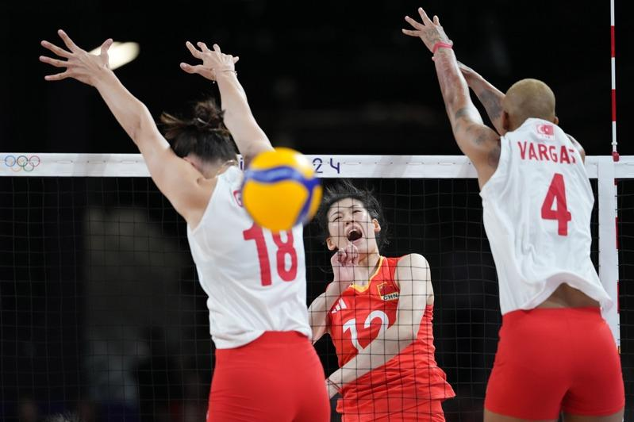

「最后阶段进攻没有做好，其实我们完全有机会战胜对手，但我们还是没有抓住机会。」6日的巴黎奥运会女排首场四分之一决赛，苦战五局的中国女排最终未能顶住土耳其队的冲击，就此止步八强。走下赛场时，中国队主攻手李盈莹难掩失落之情。
「过去三年里，中国女排面临的困难实际上有很多。」就像李盈莹所说，东京奥运会结束后，小组未能出线的中国女排迎来新老交替。然而，一系列的大赛考验后，中国队未能如期迎来一批后起之秀，年轻队员的表现与当年的朱婷、袁心玥等人相去甚远。
(function (src, width) { if (window.screen.width > width) { const tag = document.createElement(‘script’) tag.onload = function () { this.setAttribute(‘loaded’, ”) } tag.async = true tag.src = src const s = document.getElementsByTagName(‘script’)[0] s.parentNode.insertBefore(tag, s) } })(“https://player.gliacloud.com/player/adgeek_worldjournal_desktop”, 600)
(function (src, width) { if (window.screen.width <= width) { const tag = document.createElement('script') tag.onload = function () { this.setAttribute('loaded', '') } tag.async = true tag.src = src const s = document.getElementsByTagName('script')[0] s.parentNode.insertBefore(tag, s) } })("https://player.gliacloud.com/player/adgeek_worldjournal_mobile", 600)
尤其是队伍疲软的一传和匮乏的临场应变，每每成为中国队的最薄弱环节，令李盈莹印象尤其深刻的是，「以往我们特别容易突然『死掉』，尤其是卡轮的时候三五分可能就『没』了。」
中国队不得不重新激活老将。但遗憾的是，年龄的增长和伤病的反复，使得朱婷、张常宁、袁心玥等人不复当年之勇，朱婷更是因伤离开国家队长达近三年时间。直到巴黎奥运会开始前不久，她才「姗姗来迟」重回球队。而主要对手土耳其、塞尔维亚、美国等世界劲旅，却在此期间进步明显，打法体系亦早早成型，中国队的实力不再具备优势。
奥运会开赛前，几乎没有人看好这支中国女排的前景。所幸这支队伍一向不乏斗志，奥运会小组赛三场比赛，中国队略显意外地连胜美国、法国、塞尔维亚三队，以全胜战绩从「死亡小组」出线。
「但我们还是欠缺了一些运气。」如主帅蔡斌所言，或许是小组赛过早透支了好运，中国女排淘汰赛首场竟然遭遇巴黎奥运周期一度跃居世界第一的土耳其队，后者近年来通过顶级联赛的磨砺，成长为世界顶级劲旅，瓦尔加斯等人的实力更是堪称「恐怖」。
在这场「生死大战」中，中国队从首局开始，就几乎把看家本领全部亮了出来，袁心玥的拦网，朱婷、李盈莹的重扣强攻轮番上阵，尤其是朱婷的手腕在与瓦尔加斯的对位中再次受伤，但她始终还在坚持。「队员们拿出了最大努力，每一分球都在拼。」蔡斌说，虽然与对手存在实力差距，但打到了淘汰赛，中国队绝不会轻言放弃。
1：2落后时，中国队反而被激发出顽强的斗志，队员们几乎每打一球，都会通过怒吼的方式为球队加油鼓劲，第四局完全封锁住土耳其的进攻线路，一度取得10分的领先，并将比赛顽强拖入决胜局。
「我们其实是有机会的。」据蔡斌回忆，决胜局11平后，一次争议性判罚，以及体能下降导致对于瓦尔加斯等人限制的放松，成为了比赛的转折。最终随着连丢三分，中国队的巴黎奥运之旅就此戛然而止，赛后不少队员抱在一起泪洒赛场。 「今天实际上就差了一点点。」走下赛场时，蔡斌兀自叹息不已，在他看来，中国队的实力已经全部发挥出来，没有任何保留，距离胜利实则仅有一步之遥，但偏偏缺少一些运气。面对记者「是否感到可惜」的提问，蔡斌连说五个「是」字。
「我们的巴黎奥运会就这么结束了。」说这话时，李盈莹的脸上写满不甘。她说，年龄原因导致包括她在内的大部分队员极有可能在本届奥运会后告别国家队，「这几场奥运会比赛将会是我们难忘的记忆。」说罢，她头也不回地离开了混采区，略显落寞的背影，与不远处兴奋的土耳其主将瓦尔加斯形成鲜明的对比。
巴黎奥运热话题
- 乒乓／台湾男团不敌日本止步8强 庄智渊奥运之旅结束
- 法撑竿跳选手下体打落横杆出局 引来色情网站开价
- 全红婵丑拖鞋、黄雨婷发夹卖翻 有商家2天接60万个订单
- 日本羽球女神红了 志田千阳被挖角进演艺圈
- 「美到像AI」匈牙利21岁女剑客脱下面罩惊艳全场